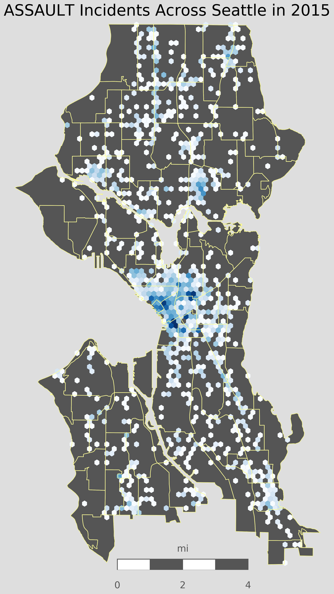

Using publically available datasets, I was able to map out the crime in Seattle. Data is found HERE
Using Tkinter to Create a GUI:


Using Tkinter combined with Matplotlib I created a GUI to display the crime statistics for any given crime and year. The results are displayed in bar graph format and are grouped by crime district.
Using Basemap to Create Hexbin and Cloreopath Plots:

Using Pandas, Matplotlib, and Basemap, I was able take a shapefile of Seattles different neighborhoods and create a hexbin plot. Darker blue areas in the plot correspond to higher rates of crime, in this case assault. My main goal for using this data is to perform a statistical analysis of crime across Seattle. I thought it would be interesting to use this crime data with my own location data to see how often I am near areas of high crime.
Using Plotly to Map Crimes on an Interactive Map
Using Plotly and its built-in Mapbox feature, I was able to map out crimes on an interactive map. Using a drop-down menu, the user can select which map style they want to see, including: Classic Map view, satellite, and a dark view for contrast. A slider on the bottom of the graph can be used to select the data by year, goiong back to 2014. The above map shows the crime stats for reported Assaults in Seattle. It is interesting to see that even without including a discrete crime count, there is a noticablely increasing rate of crime over the years.
The above map shows the crime stats for reported Robberies in Seattle. This map is another example of a noticable trend of increasing crime in Seattle. Using the public dataset for Seattle Crime, this Python script can be easily adapted to create a similar map for all crime types that occur in Seattle.